Geometry
Area of a Triangle
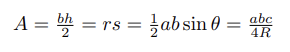Where A is the area, b is the base, and h is the height. In the second equation, r is the inradius
and s is the semiperimeter (which is half the perimeter). In the third equation, θ is the angle
between two sides a, b of the triangle. In the final equation, a, b, c are the sides of the triangle with
circumradius R.
Area of a Square (and kite/rhombus)
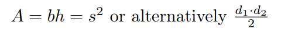Where A is the area, b is the base, h is the height, s is the side length, and d1,2 is the length
of a diagonal. The prior equation only applies to squares. The latter formula applied to any
quadrilateral with perpendicular diagonals (such as kites and rhombi).
Area of a Rectangle
Where A is the area, b is the base, and h is the height.
Area of a Trapezoid
Where A is the area, b1 and b2 are bases, and h is the height
Area of a Regular Hexagon
Where A is the area and s is the side length. Deriving this by breaking the hexagon into six
equilateral triangles and then 12 right triangles is a useful exercise
Area of a Regular Polygon
Where A is the area, a is the apothem, p is the perimeter, n is the number of sides, and s is the
side length.
Volume/Surface Area of a Cone
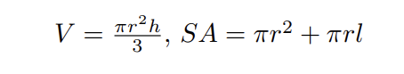Where V is the volume, SA is the surface area, r is the radius of the circular base, h is the height,
and l is the slant height.
Volume/Surface Area of a Sphere
Where V is the volume, SA is the surface area, and r is the radius of the sphere (which is radius
of the central cross section/the base of the semisphere).
Volume/Surface Area of a Cube

Where V is the volume, SA is the surface area, and s is the length of a side.
Volume/Surface Area of a Pyramid
Where V is the volume, SA is the surface area, b is the area of the base, h is the height, l is the
slant height, and s is the length of a side of the base. Note that a pyramid can have a base of
any polygon, but if none is specified, assume a square base. A pyramid with a triangular base is
known as a tetrahedron.
Volume/Surface Area of a Cylinder
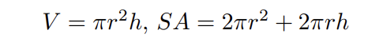Where V is the volume, SA is the surface area, r is the radius of the circular base, and h is the
height.
Volume/Surface Area of a Prism
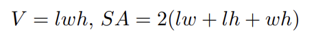Where V is the volume, SA is the surface area, l is the length, w is the width, and h is the height.
Pythagorean Theorem and Right Triangles
Where c is the hypotenuse of a right triangle with legs a and b. Note that there are some “special”
right triangles. These include right triangles with angle measures 45◦ − 90◦ − 45◦ and 30◦ −
60◦ − 90◦
. The prior type of right triangle has the property that if either leg (they are identical)
has length x, the hypotenuse has length x
√
2. Similarly, the latter type of right triangle has the
property that if the side opposite the 30◦ angle has length x, the side opposite the 60◦ angle has
length x
√
3, and the side opposite the 90◦ angle has length 2x. You should also memorize some
common Pythagorean triples (if a triangle has these side lengths, or these side lengths multiplied
by some factor, it is a right triangle): 3 − 4 − 5, 5 − 12 − 13, 7 − 24 − 25, and 8 − 15 − 17.
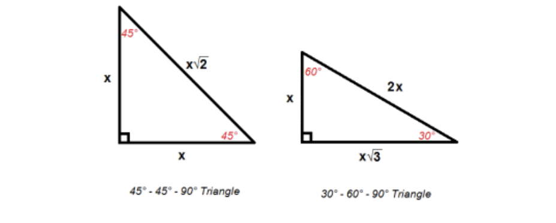
Distance Formula
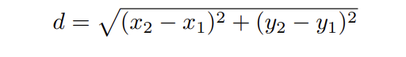Where (x1, y1) and are points a coordinate plane and d is the distance between them. This is
essentially the Pythagorean Theorem restated for points on a plane.
Heron’s Formula
Where A is the area and s is the semiperimeter of the triangle with sides a, b, c.
Cyclic Quadrilaterals*
A quadrilateral is cyclic if and only if the quadrilateral can be inscribed in a circle. Here are some
of the fundamental properties of cyclic quadrilaterals.
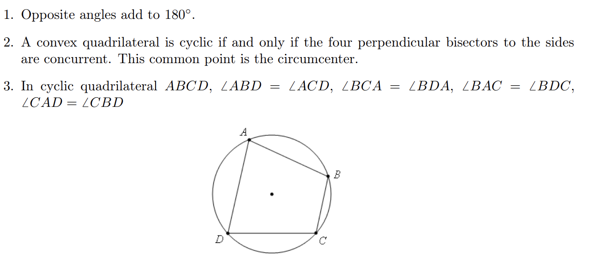
Ptolemy’s Theorem
Where ABCD is a cyclic quadrilateral with side lengths a, b, c, d and diagonals e, f (with a opposite
b and c opposite d).
Brahmagupta’s Formula
Where K is the area and s is the semiperimeter of the quadrilateral with sides a, b, c, d. For this
formula to work, the quadrilateral must be cyclic.
Power of a Point
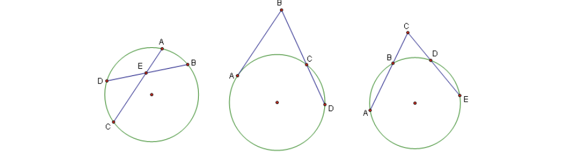This theorem states that in the leftmost diagram (two intersecting internal chords), AE · EC =
DE · EB, in the middle diagram (a tangent and a secant that meet at a point) AB2
= BC · CD,
and in the last diagram (secants that intersect outside the circle) CB · CA = CD · CE.
Ceva’s Theorem
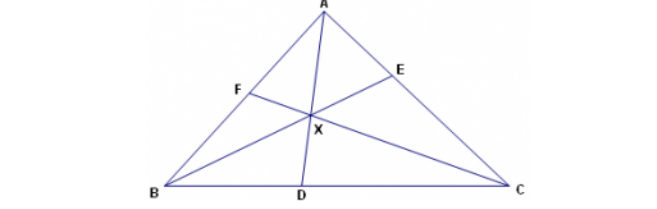Ceva’s theorem states that in with points D, E, F on sides BC, AC, AB respectively, are concurrent
if, and only if, BD
DC ·
CE
EA ·
AF
F B = 1
Menelaus’ Theorem
This configuration shows up from time to time, though not often. The theorem states that given
a configuration as shown below, BP · CQ · P C = QA · RB · AR
Arcs and Angles in a Circle
An arc is a portion of the circle’s circumference measured in degrees. The measure of an angle
formed by the center of a circle and two point on the circumference is equal to the measure of the
intercepted (subtended) arc. An angle formed by three points on the circumference of the circle is
equal to 1
2
the measure of the subtended arc.
Angle Bisector Theorem
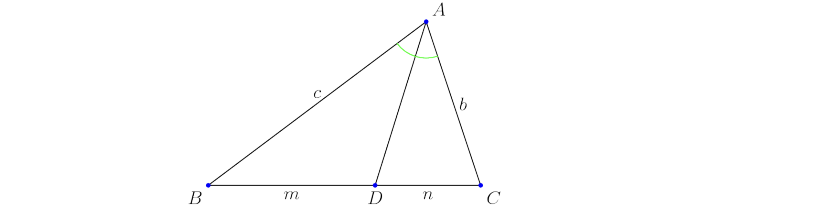The Angle Bisector Theorem states that given 4ABC and angle bisector AD, where D is on side
BC, then c
m =
b
n
. Likewise, the converse of this theorem holds as well
Trigonometric Identities
Note that tan θ =
sin θ
cos θ
and cot θ =
cos θ
sin θ
. Also sec θ =
1
cos θ
and csc θ =
1
sin θ
. Therefore, the
identities for tan, cot,sec, csc are easily derived from the identities for sin and cos.
Double Angle: sin 2θ = 2 sin θ cos θ cos 2θ = cos2
θ − sin2
θ Negative Angles: sin cos −θ =
sin cos θ cos sin −θ = cos − sin θ = cos sin θ Pythagorean Identities: sin2
θ + cos2
θ = 1 cot2
θ + 1 =
csc2
θ tan2
θ + 1 = sec2
θ Addition/Subtraction Identities: sin a ± B = sin a cos B ± sin B cos a
cos a ± B = cos a cos B ± sin a sin B Half Angle Identities: sin θ
2 = ±
q
1−cosθ
2
cos θ
2 = ±
q
1+cosθ
Triangle Inequality
The Triangle Inequality says that in nondegenerate 4ABC: AB + BC > AC, BC + AC > AB,
AC + AB > BC
Pick’s Theorem
A = I +
1
2B − 1 Where A is the area, I is the number of lattice points in the interior, and B is the
number of lattice points on the boundary of a figure in the coordinate plane.
Stewart’s Theorem
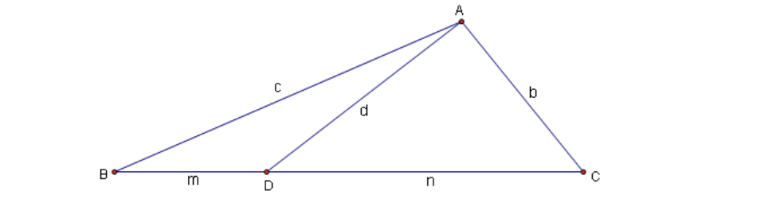Take 4ABC with sides of length a, b, c opposite vertices A, B, C respectively. If cevian AD is
drawn so that BD = m, DC = n, AD = d we have that man + dad = bmb + cnc, which can
be remembered using the mnemonic device, “A man and his dad put a bomb in the sink.” This
theorem isn’t used very often in competition math, but it can trivialize otherwise difficult problems
when it does come up
(Extended) Law of Sines
sin A =
b
sin B =
c
sin C = 2R Where a, b, c are sides of a triangle, each opposite its respective angle
A, B, C. R is the circumradius.
Law of Cosines
For a triangle with sides a, b, c and opposite angles A, B, C respectively, the Law of Cosines states
c
2 = a
2 + b
2 − 2ab cos C
Shoelace Theorem
Shoelace Theorem Suppose the polygon has vertices (a1, b1),(a2, b2), ...,(an, bn) listed in clockwise
order. Then the area of P is 1
2
|(a1b2 + a2b3 + ... + anb1) − (b1a2 + b2a3 + ... + bna1)| The Shoelace
Theorem gets its name because if one lists the coordinates in a column and marks the pairs of
coordinates to be multiplied, the resulting image looks like laced-up shoes.
(a1, b1)
(a2, b2)
...
(an, bn)
(a1, b1)